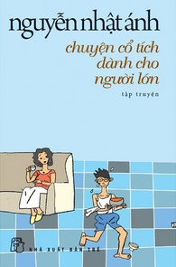

Toggle navigation
LIB ONLINE
TRANG CHỦ
TÀI NGUYÊN
Sách
Luận án
Bài trích
Báo tạp chí
Hồ sơ sự kiện
Cơ sở dữ liệu môn học
TIN TỨC
TÌM KIẾM TÀI LIỆU
Tất cả
Tài liệu giấy
Tài liệu điện tử
Tìm kiếm
SÁCH MỚI

Chuyện cổ tích dành cho người lớn
Quán gò đi lên
Cô gái đến từ hôm qua
Kỹ năng đối diện hiểm nguy
Văn hóa làng
Quán gò đi lên
Chuyện cổ tích dành cho người lớn
Quán gò đi lên
Cô gái đến từ hôm qua
Kỹ năng đối diện hiểm nguy
Văn hóa làng
Quán gò đi lên